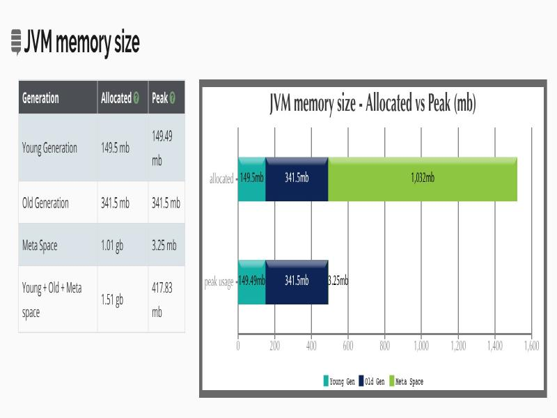
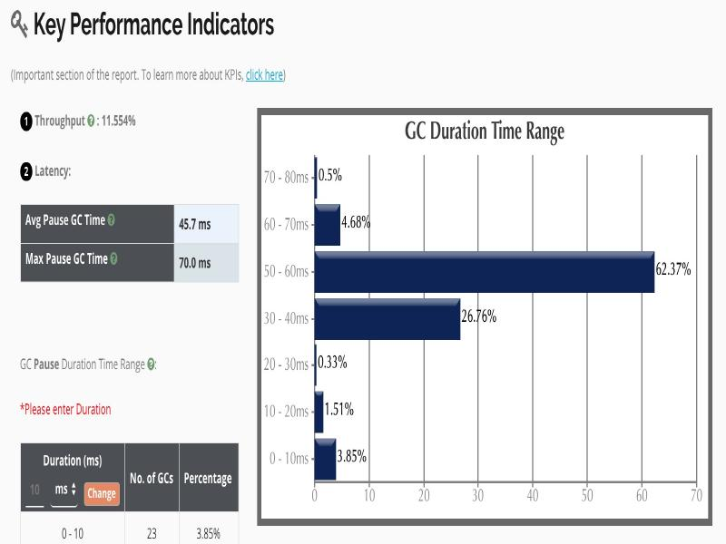
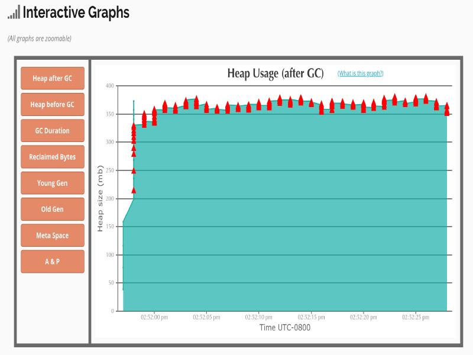
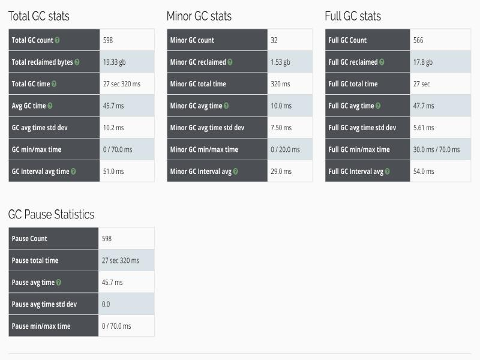
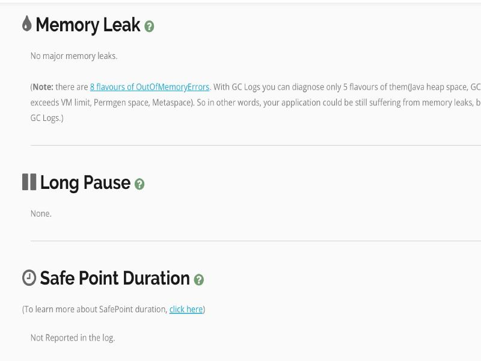
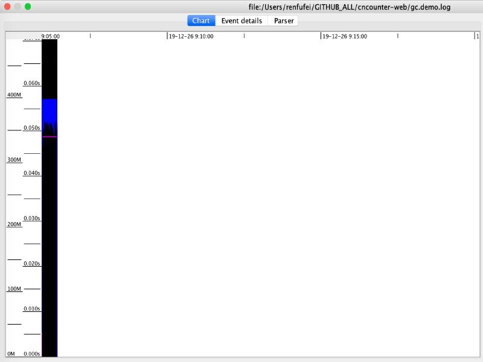
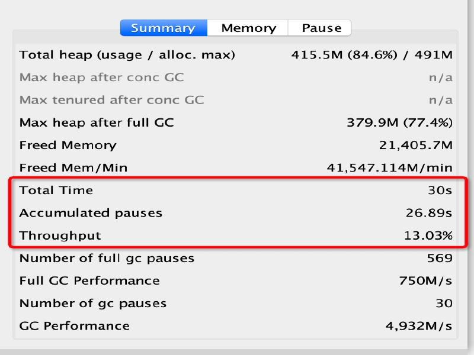
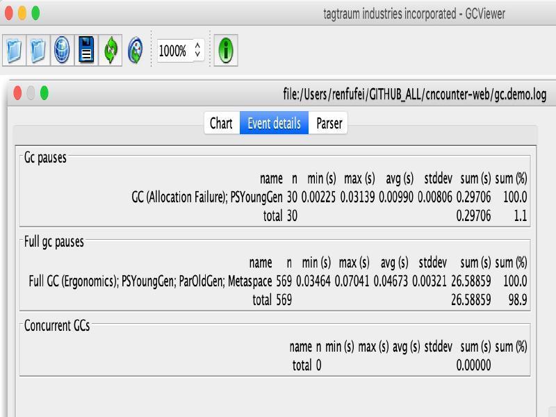

- 01 阅读此专栏的正确姿势.md.html
- 02 环境准备：千里之行，始于足下.md.html
- 03 常用性能指标：没有量化，就没有改进.md.html
- 04 JVM 基础知识：不积跬步，无以至千里.md.html
- 05 Java 字节码技术：不积细流，无以成江河.md.html
- 06 Java 类加载器：山不辞土，故能成其高.md.html
- 07 Java 内存模型：海不辞水，故能成其深.md.html
- 08 JVM 启动参数详解：博观而约取、厚积而薄发.md.html
- 09 JDK 内置命令行工具：工欲善其事，必先利其器.md.html
- 10 JDK 内置图形界面工具：海阔凭鱼跃，天高任鸟飞.md.html
- 11 JDWP 简介：十步杀一人，千里不留行.md.html
- 12 JMX 与相关工具：山高月小，水落石出.md.html
- 13 常见的 GC 算法（GC 的背景与原理）.md.html
- 14 常见的 GC 算法（ParallelCMSG1）.md.html
- 15 Java11 ZGC 和 Java12 Shenandoah 介绍：苟日新、日日新、又日新.md.html
- 16 Oracle GraalVM 介绍：会当凌绝顶、一览众山小.md.html
- 17 GC 日志解读与分析（基础配置）.md.html
- 18 GC 日志解读与分析（实例分析上篇）.md.html
- 19 GC 日志解读与分析（实例分析中篇）.md.html
- 20 GC 日志解读与分析（实例分析下篇）.md.html
- 21 GC 日志解读与分析（番外篇可视化工具）.md.html
- 22 JVM 的线程堆栈等数据分析：操千曲而后晓声、观千剑而后识器.md.html
- 23 内存分析与相关工具上篇（内存布局与分析工具）.md.html
- 24 内存分析与相关工具下篇（常见问题分析）.md.html
- 25 FastThread 相关的工具介绍：欲穷千里目，更上一层楼.md.html
- 26 面临复杂问题时的几个高级工具：它山之石，可以攻玉.md.html
- 27 JVM 问题排查分析上篇（调优经验）.md.html
- 28 JVM 问题排查分析下篇（案例实战）.md.html
- 29 GC 疑难情况问题排查与分析（上篇）.md.html
- 30 GC 疑难情况问题排查与分析（下篇）.md.html
- 31 JVM 相关的常见面试问题汇总：运筹策帷帐之中，决胜于千里之外.md.html
- 32 应对容器时代面临的挑战：长风破浪会有时、直挂云帆济沧海.md.html
21 GC 日志解读与分析（番外篇可视化工具）
通过前面的学习，我们发现 GC 日志量很大，人工分析太消耗精力了。由于各种 GC 算法的复杂性，它们的日志格式互相之间不太兼容。
有没有什么工具来减少我们的重复劳动呢? 这种轮子肯定是有现成的。比如 GCEasy、GCViwer 等等。
这一节我们就开始介绍一些能让我们事半功倍的工具。
GCEasy 工具
GCEasy 工具由 Tier1app 公司 开发和支持，这家公司主要提供3款分析工具：
- GCEasy，访问地址：https://gceasy.io/，是一款在线的 GC 日志分析工具，支持各种版本的 GC 日志格式。
- FastThread，官网地址：https://fastthread.io/，线程分析工具，后面我们专门有一节课程会进行介绍。
- HeapHero，官网地址：https://heaphero.io/，顾名思义，这是一款 Heap Dump 分析工具。
其中 GCEasy 可用来分析定位GC和内存性能问题，支持以下三种模式：
- 官方网站在线分析（免费），我们主要介绍这种方式
- API 接口调用（付费计划）
- 本地安装（企业付费）
特性介绍
作为一款商业产品，分析能力和结果报告自然是棒棒的。
- 可以分析 GC 日志和 JStat 日志
- 支持上传文件的方式（免费）
- 支持粘贴日志文本的方式（免费）
- 支持下载结果报告 *（付费方案）
- 支持分享链接（免费】
- 支持 API 调用的方式 *（付费方案）
- 企业版支持本地安装 *（企业付费）
- 付费方案可以免费试用：就是说结果现在也是可以试用下载的
测试案例
我们这里依然使用前面演示的示例代码，稍微修改一下，让其执行 30 秒左右。
假设程序启动参数为：
-XX:+UseParallelGC
-Xms512m
-Xmx512m
-Xloggc:gc.demo.log
-XX:+PrintGCDetails
-XX:+PrintGCDateStamps
然后我们就得到了一个 GC 日志文件 gc.demo.log。
在线使用示例
打开页面 https://gceasy.io/，选择上传文件或者粘贴文本：
比如使用我们前面生成的 gc.demo.log 文件，然后点击页面上的分析按钮，就可以生成分析报告。
如果日志内容很大，我们也可以粘贴或者上传一部分 GC 日志进行分析。
1. 总体报告
可以看到检测到了内存问题。
2. JVM 内存大小分析

这里有对内存的分配情况的细节图表。
3. GC 暂停时间的分布情况
关键的性能指标：平均 GC 暂停时间 45.7ms，最大暂停时间 70.0ms。绝大部分 GC 暂停时间分布在 30~60ms，占比 89%。

4. GC 之后的内存情况统计
GC 执行以后堆内存的使用情况。

5. GC 情况汇总统计信息
可以看到 Full GC 是影响性能的绝对大头。

6. 内存分配速度
内存分配的速度越快，说明我们程序里创建对象越频繁。
7. 内存泄漏、长暂停、安全点等信息
没有检测到内存泄漏。

8. GC 原因汇总
可以看到 GC 发生的原因，其中 566 次是 GC 策略自己调整的（Ergonomics），32 次是因为分配失败导致的。
9. 其他信息
可以看到，这里介绍了两个工具：
- fastThread，官网地址：https://fastthread.io/，我们后面专门有一个章节进行介绍。
- HeapHero，官网地址：https://heaphero.io/，顾名思义，这是一款 Java & Android Heap Dump Analyzer。
工具用得棒，能力自然就会被放大。
API 调用
我们也可以使用 API 调用方式，官方给出的示例如下：
curl -X POST --data-binary @./my-app-gc.log
https://api.gceasy.io/analyzeGC?apiKey={API_KEY_SENT_IN_EMAIL}
--header "Content-Type:text"
有 API 支持，就可以通过编程的方式，或者自动化脚本的方式来使用这个工具。
当然，有上传 API，肯定也有下载 API。本文不进行详细的介绍，有兴趣可以看官方文档。
GCViwer 工具
下面我们介绍一款很好用的开源分析工具：GCViwer。
GCViewer 项目的 GitHub 主页是：
下载与安装
然后我们在 Github 项目的 releases 页面 中，找到并下载最新的版本，例如：gcviewer-1.36.jar。
Mac 系统可以直接下载封装好的应用：gcviewer-1.36-dist-mac.zip。下载，解压，安装之后首次打开可能会报安全警告，这时候可能需要到安全设置里面去勾选允许，例如：
测试案例
先获取 GC 日志文件，方法同上面的 GCEasy 一样。
启动 GCViewer
可以通过命令行的方式启动 GCViewer 工具来进行分析：
java -jar gcviewer_1.3.4.jar
新版本支持用 java 命令直接启动。老版本可能需要在后面加上 GC 日志文件的路径。工具启动之后，大致会看到类似下面的图形界面：
然后在图形界面中点击对应的按钮打开日志文件即可。现在的版本支持单个 GC 日志文件，多个 GC 日志文件，以及网络 URL。
当然，如果不想使用图形界面，或者没法使用图形界面的情况下，也可以在后面加上程序参数，直接将分析结果输出到文件。
例如执行以下命令：
java -jar gcviewer-1.36.jar /xxxx/gc.demo.log summary.csv chart.png
这会将信息汇总到当前目录下的 summary.csv 文件之中，并自动将图形信息保存为 chart.png 文件。
结果报告
在图形界面中打开某个 GC 日志文件。

上图中，Chart 区域是对 GC 事件的图形化展示。包括各个内存池的大小和 GC 事件。其中有 2 个可视化指标：蓝色线条表示堆内存的使用情况，黑色的 Bar 则表示 GC 暂停时间的长短。每个颜色表示什么信息可以参考 View 菜单。
从前面的图中可以看到，程序启动很短的时间后，堆内存几乎全部被消耗，不能顺利分配新对象，并引发频繁的 Full GC 事件. 这说明程序可能存在内存泄露，或者启动时指定的内存空间不足。
从图中还可以看到 GC 暂停的频率和持续时间。然后发现 GC 几乎不间断地运行。
右边也有三个选项卡可以展示不同的汇总信息：

“Summary（摘要）” 中比较有用的是：
- “Throughput”（吞吐量百分比），吞吐量显示了有效工作的时间比例，剩下的部分就是 GC 的消耗
- “Number of GC pauses”（GC 暂停的次数）
- “Number of full GC pauses”（Full GC 暂停的次数）
以上示例中的吞吐量为 13.03%。这意味着有 86.97% 的 CPU 时间用在了 GC 上面。很明显系统所面临的情况很糟糕——宝贵的 CPU 时间没有用于执行实际工作，而是在试图清理垃圾。原因也很简单，我们只给程序分配了 512MB 堆内存。
下一个有意思的地方是“Pause”（暂停）选项卡：
其中“Pause”展示了 GC 暂停的总时间，平均值，最小值和最大值，并且将 total 与 minor/major 暂停分开统计。如果要优化程序的延迟指标，这些统计可以很快判断出暂停时间是否过长。
另外，我们可以得出明确的信息：累计暂停时间为 26.89 秒，GC 暂停的总次数为 599 次，这在 30 秒的总运行时间里那不是一般的高。
更详细的 GC 暂停汇总信息，请查看主界面中的“Event details”选项卡：

从“Event details”标签中，可以看到日志中所有重要的GC事件汇总：普通 GC 的停顿次数和 Full GC 停顿次数，以及并发GC 执行数等等。
此示例中，可以看到一个明显的地方：Full GC 暂停严重影响了吞吐量和延迟，依据是 569 次 Full GC，暂停了 26.58 秒（一共执行 30 秒）。
可以看到，GCViewer 能用图形界面快速展现异常的 GC 行为。一般来说，图像化信息能迅速揭示以下症状：
- 低吞吐量。当应用的吞吐量下降到不能容忍的地步时，用于真正的业务处理的有效时间就大量减少。具体有多大的“容忍度”（tolerable）取决于具体场景。按照经验，低于 90% 的有效时间就值得警惕了，可能需要好好优化下 GC。
- 单次 GC 的暂停时间过长。只要有一次 GC 停顿时间过长，就会影响程序的延迟指标。例如，延迟需求规定必须在 1000ms 以内完成交易，那就不能容忍任何一次GC暂停超过 1000 毫秒。
- 堆内存使用率过高。如果老年代空间在 Full GC 之后仍然接近全满，程序性能就会大幅降低，可能是资源不足或者内存泄漏。这种症状会对吞吐量产生严重影响。
真是业界的福音——图形化展示的 GC 日志信息绝对是我们重磅推荐的。不用去阅读和分析冗长而又复杂的 GC 日志，通过图形界面，可以很容易得到同样的信息。不过，虽然图形界面以对用户友好的方式展示了重要信息，但是有时候部分细节也可能需要从日志文件去寻找。